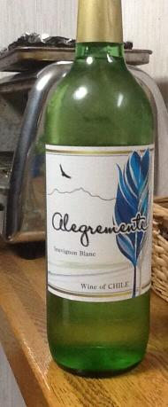
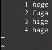
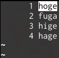

日記 - 2014-01
2014-01-26
ICPC WF進出
今更といえば今更ですが、情報が出揃ったので。
ICPCにチームbinding.pryとして、@tokoharu_sakura, @mikecat_mixcと参加してましたが、この度WFに行けることになりました。 ちょっと宣伝したら東工大トップのニュースにも写真付きで載ってうれしいです（去年もニュースには載ったけど写真は出してなかった）。
去年に引き続き2回目のWFで、しかも今年で大学入学から5年目なので、出場回数的にも年数的にも、選手としては最後のICPCです。 今回のICPCに出ると決めた時点では正直ここまでやろうとは思っていなかったので、ずいぶんと遠くまで来たなあという気はしますが、 せっかくのチャンスなので去年の雪辱含め、悔いの残らないように楽しみたいと思います。
2014-01-14
400円ワイン
前から気になっていた、コンビニの安いワインを買ってみました。

セブンイレブンで398円。 一緒に500円くらいのワインも並んでいましたが、それよりも安い最安ワインです。
あまり期待しないで飲んだんですが、思った以上に普通の味で良いです。 ワインの味はまずいかまずくないかしか分からないですが、このワインは少なくともまずくはない。 変なワインだとえぐみが延々と残り続けたりしてひどいですが、これは普通に飲めます。
というわけで、久々に酒情報更新しました。
2014-01-01
tmux上のlessで検索結果がハイライトされない問題と戦う
問題
tmux上でlessやman（PAGERとしてlessを使っている）を起動し、/コマンドで検索すると、マッチした単語がイタリックになるだけでハイライトされない。
|  |  |
| よくない表示 | 期待する表示 |
よくない解決法
.tmux.confにset -g default-terminal "rxvt-unicode-256color"とか書く。
man tmuxすると、default-terminalの説明のところに
For tmux to work correctly, this must be set to ‘screen’ or a derivative of it
とか書いてある。 具体的に何がまずくなるのかは知らないけど、やるなと言われたことはやらないのが無難。
よい解決法
terminfoをいじる。
とかやってscreen_revのterminfoを生成してから、set -g default-terminal "screen-rev"を.tmux.confに書く。
参考
- osx - tmux man-page search highlighting - Stack Overflow
- http://tmux.svn.sourceforge.net/viewvc/tmux/trunk/FAQ
- ANSI escape code - Wikipedia, the free encyclopedia